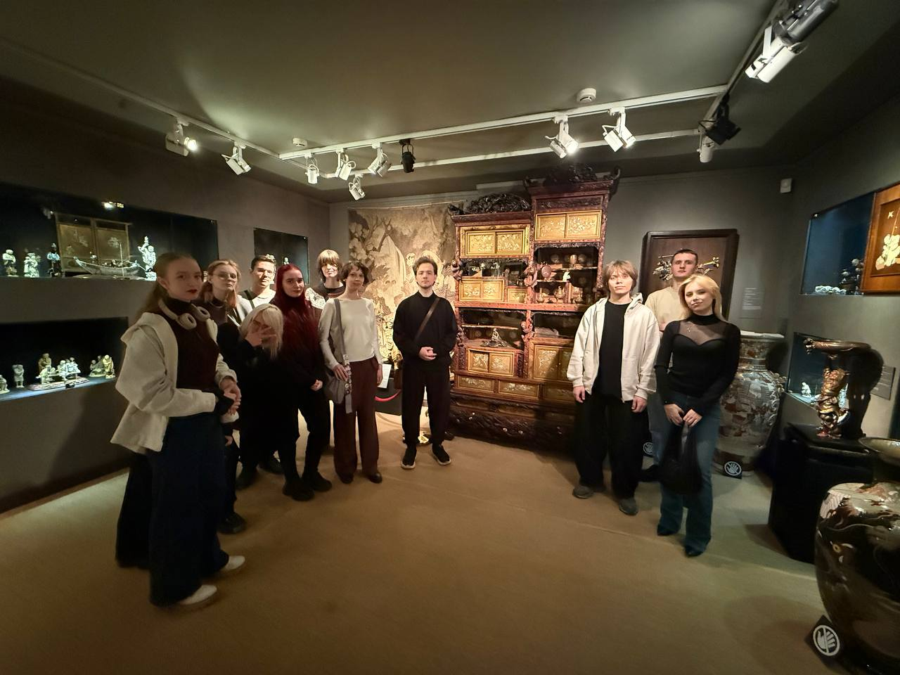
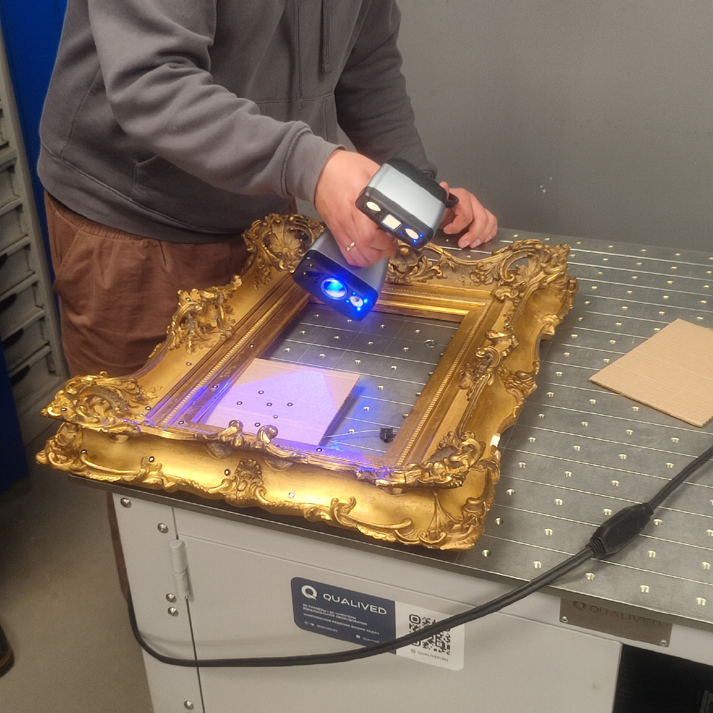
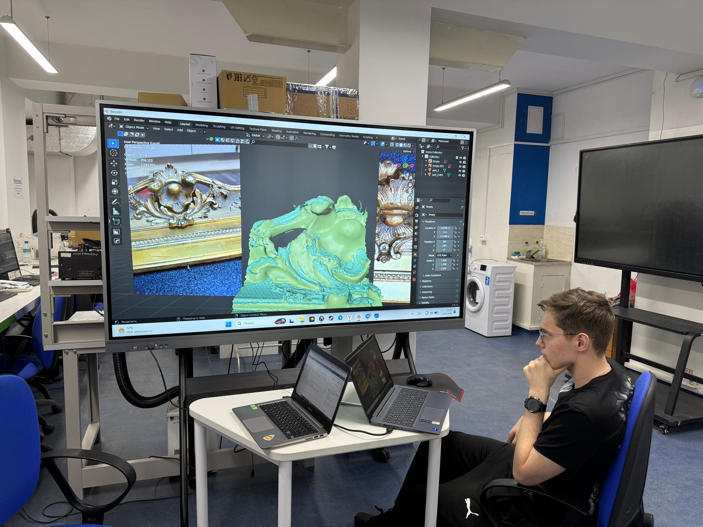

Хроника ключевых этапов проекта — в снимках и кратких заметках.

Посещение «Центра искусств Москва»
Знакомство с коллекцией, изучение подлинных исторических рам в экспозиционном контексте. Первые зарисовки и фотофиксация образцов.

Высокоточное 3D-сканирование
Получение цифрового слепка рамы как основы для дальнейшей обработки модели. Сканирование выполнено с разрешением, достаточным для воспроизведения мелкого орнамента.

Проверка точности 3D-элемента рамы
Контроль детализации и геометрической точности обработанного элемента. Сравнение с исходным образцом, выявление и устранение артефактов сканирования.